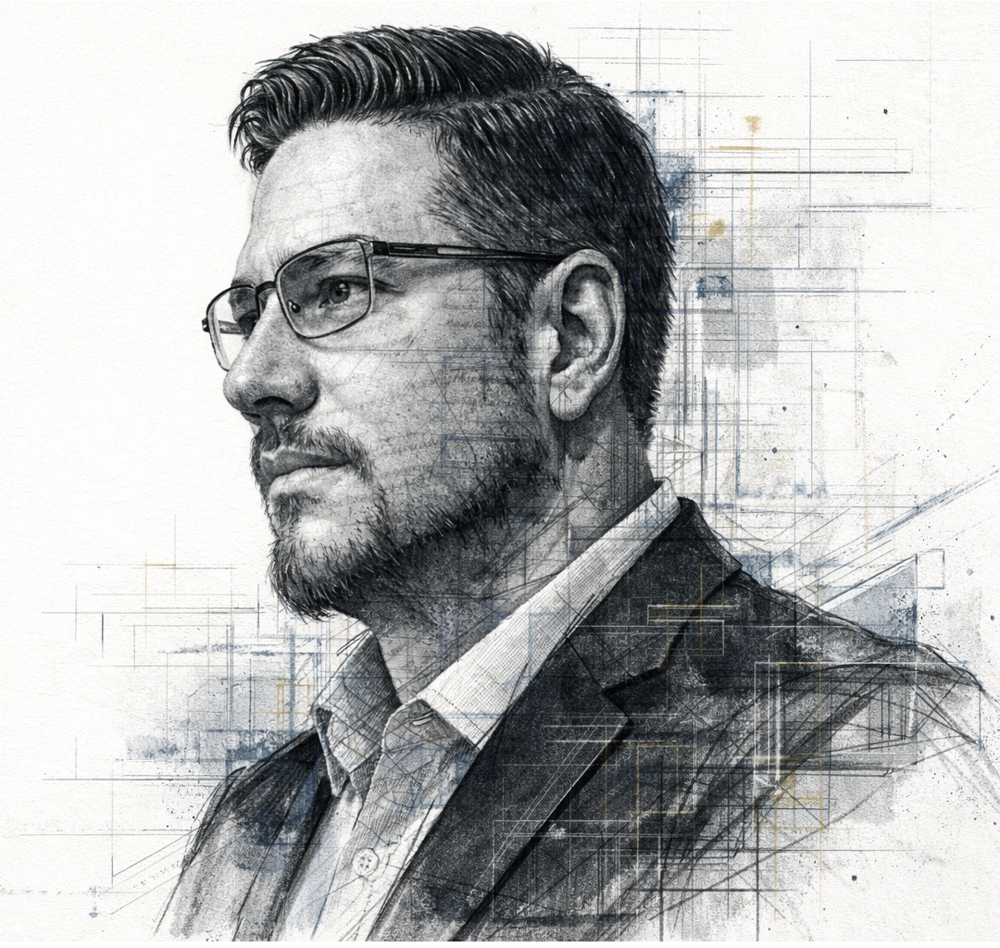
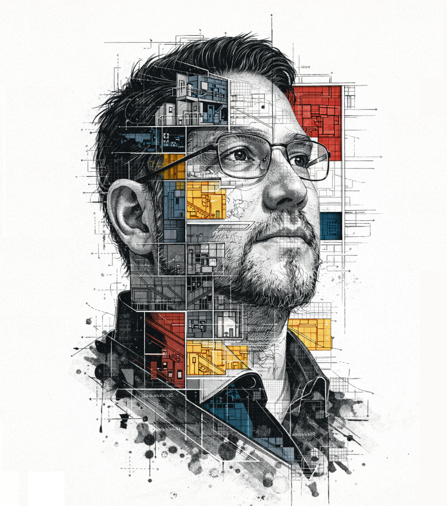

Profesional TI | QA Engineer | Procesos y Proyectos Tecnológicos
Profesional de Tecnologías de Información con más de 20 años de experiencia en gestión de sistemas, infraestructura tecnológica, bases de datos, calidad de software y transformación digital. Mi trayectoria se ha desarrollado en organizaciones de alta exigencia del sector público y privado, participando en iniciativas orientadas a la continuidad operacional, optimización de procesos y mejora de servicios tecnológicos.
Actualmente participo en iniciativas de aseguramiento de calidad de software (QA), testing funcional, gestión de procesos y proyectos tecnológicos, colaborando en la implementación de metodologías, estándares e indicadores que permitan fortalecer la gobernanza tecnológica y apoyar la toma de decisiones institucionales.
Mi experiencia combina conocimientos técnicos en infraestructura, administración de plataformas, bases de datos y seguridad informática, junto con competencias en gestión de proyectos, análisis de procesos, gestión de riesgos y coordinación transversal entre áreas técnicas y de negocio.
He participado como contraparte técnica en proyectos tecnológicos, coordinando equipos multidisciplinarios y promoviendo la adopción de buenas prácticas, la mejora continua y la implementación de soluciones alineadas con los objetivos estratégicos de la organización.
Mi enfoque profesional integra tecnología, calidad, procesos y gestión, permitiéndome contribuir tanto en la ejecución técnica como en la planificación, seguimiento y control de iniciativas que generan valor para la organización.
Magíster en Planificación y Control de Gestión
La obtención del Magíster en Planificación y Control de Gestión fortaleció mi capacidad para integrar la gestión estratégica con la operación tecnológica, permitiéndome comprender cómo las organizaciones transforman sus objetivos institucionales en iniciativas, procesos e indicadores orientados a resultados.
Durante el programa desarrollé competencias en planificación estratégica, control de gestión, gobierno corporativo, análisis financiero, gestión de riesgos, evaluación de desempeño y diseño de indicadores, incorporando herramientas para apoyar la toma de decisiones basada en información cuantitativa y cualitativa.
Esta formación complementa mi experiencia de más de veinte años en tecnologías de la información, entregándome una visión integral que conecta la gestión de personas, procesos, recursos y tecnología con los objetivos estratégicos de la organización.
A través de distintos proyectos académicos y casos de estudio, profundicé en metodologías de mejora continua, evaluación organizacional, gestión del cambio y dirección de iniciativas de transformación digital, especialmente aplicables al sector público y organizaciones de alta complejidad.
Como trabajo final desarrollé una investigación aplicada sobre transformación digital en el sector público, analizando los factores que influyen en la adopción de servicios digitales dentro de una institución pública de alta demanda.
La investigación identificó que las principales barreras para la transformación digital no se encuentran únicamente en la tecnología disponible, sino también en aspectos relacionados con la cultura organizacional, la gestión del cambio, la coordinación institucional y la capacidad de adaptación de las personas frente a nuevos modelos de trabajo.
A partir de estos hallazgos se propusieron lineamientos orientados a fortalecer la gobernanza digital, la adopción tecnológica y la generación de valor público mediante iniciativas de innovación y modernización institucional.
El Magíster me permitió evolucionar desde un perfil principalmente técnico hacia una visión integral de gestión, combinando experiencia en tecnologías de información con competencias en planificación estratégica, control de gestión, procesos, proyectos y transformación digital.

Profesional TI | QA Engineer | Procesos y Proyectos Tecnológicos
Profesional de Tecnologías de Información con más de 20 años de experiencia en gestión de sistemas, infraestructura tecnológica, bases de datos, calidad de software y transformación digital.
Actualmente participo en iniciativas de aseguramiento de calidad de software (QA), testing funcional, gestión de procesos y proyectos tecnológicos.
Mi experiencia combina conocimientos técnicos en infraestructura, administración de plataformas, bases de datos y seguridad informática, junto con competencias en gestión de proyectos y coordinación transversal.

Gestión Estratégica | Transformación Digital | Sector Público
La obtención del Magíster fortaleció mi capacidad para integrar la gestión estratégica con la operación tecnológica, permitiéndome comprender cómo las organizaciones transforman sus objetivos institucionales en iniciativas orientadas a resultados.
Durante el programa desarrollé competencias en planificación estratégica, control de gestión, gobierno corporativo, análisis financiero, gestión de riesgos y diseño de indicadores.
Como trabajo final desarrollé una investigación aplicada sobre transformación digital en el sector público, analizando los factores que influyen en la adopción de servicios digitales.